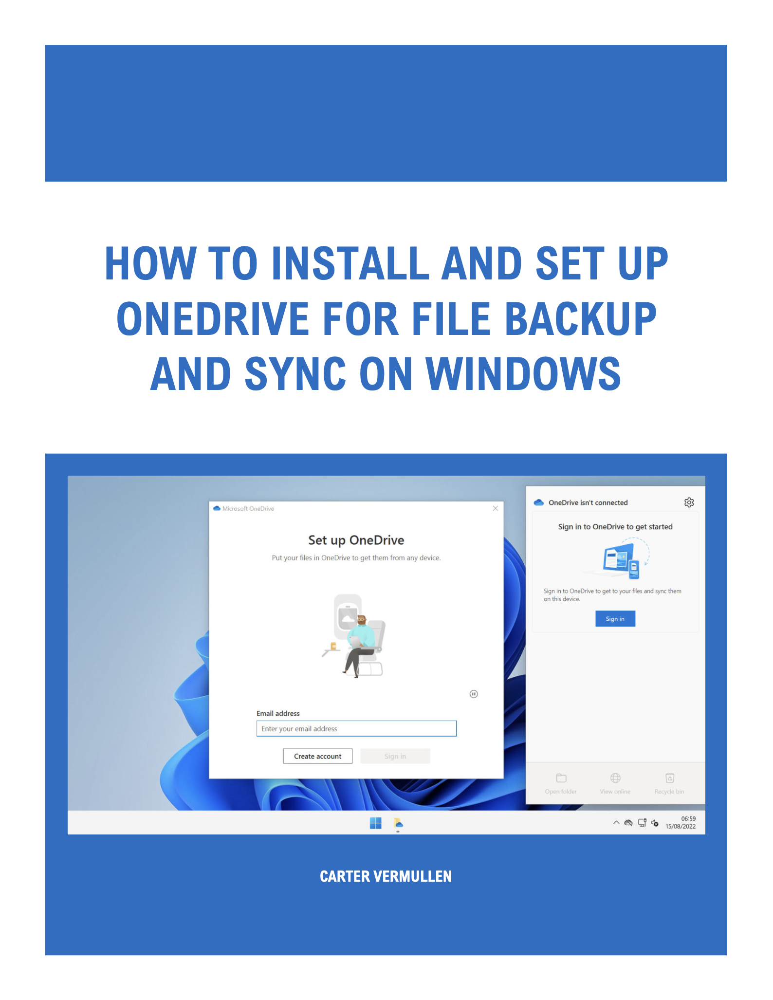
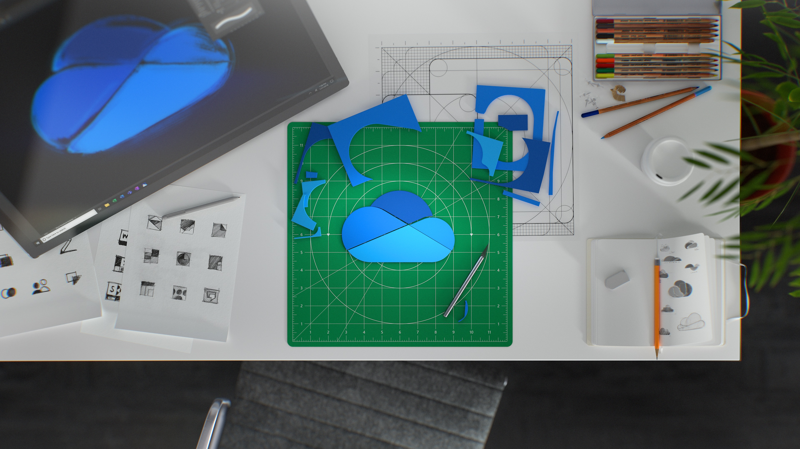

Technical Guide Cover Page


Authored step-by-step guide for installing, configuring, and using OneDrive on Windows, including troubleshooting, backup strategies, and collaboration workflows.
This project features a comprehensive technical writing assignment created for the Business Communications (ITEC 242) course, presenting a step-by-step guide on how to install, configure, and use Microsoft OneDrive for file backup and synchronization on Windows. Developed as an individual project, the guide demonstrates professional documentation standards and audience-centered communication. Designed for users with limited technical experience, it walks readers through installation, account setup, folder management, and troubleshooting. The document includes a title page, table of contents, introduction, visuals, and a structured sequence of instructions to model a professional user manual.
The guide emphasizes clarity, structure, and usability through clear action verbs, consistent formatting, numbered steps, and annotated screenshots. Each section provides detailed instructions for tasks such as checking if OneDrive is preinstalled, managing sync settings, restoring files, and integrating with Microsoft 365 apps. To ensure accessibility for a general audience, the document defines its primary and secondary audiences, applies typographic hierarchy for readability, and includes a FAQ section addressing common user questions. Visuals such as icons and interface screenshots support each step, while backup and recovery workflows illustrate how to protect and restore data effectively.
Through this project, I developed skills in information design, audience adaptation, and technical writing for IT applications. The project strengthened my ability to communicate software procedures clearly and enhanced my understanding of layout, structure, and troubleshooting documentation. It also improved my confidence in presenting technical information professionally, an important skill in IT support, software training, and user documentation. The OneDrive Technical Guide demonstrates my ability to combine precision, clarity, and design into a complete and functional technical communication product.
